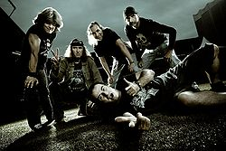
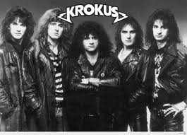

Krokus — хард-рок группа из Швейцарии. Группа Krokus была основана в городе Золотурн в 1974 г. басистом (и главным вокалистом) Крисом Фон Рором и гитаристом Томми Кифером. Позже к группе присоединился вокалист группы «Eazy Money» Марк Стораче. В таком составе был записан альбом Metal Rendez-vous (1980).

Название группы произошло от обычного цветка крокуса, который повсеместно растет в южной Европе. Основатель группы Крис Фон Рор однажды возвращался домой в поезде и увидел поле цветов крокуса. Идея об рок-группе давно была сформирована, но не было лишь названия. Крис Фон Рор предложил назваться Krokus. Участники группы поддержали эту идею, заметив, что оно идеально подходит, так как в середине слова Krokus содержится слово "рок".